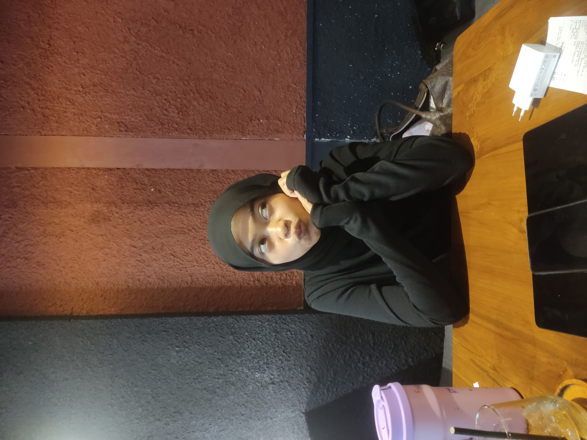
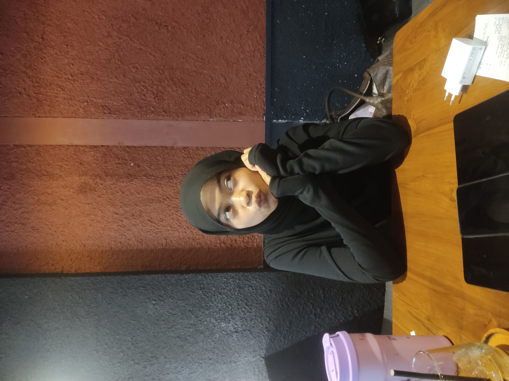

Hai Babyy 💜
hehehehe gimanaa kabarr kamuu, semogaa kamuu selalu bahagiaa yaa sayangg, mungkin hari ini aku ga banyakk hal lucu yang akuu kasih di link inii tapiii...
akuu disini mau menceritakan apaa yang ada dipikiran akuu sekarangg, tapii bingung sii mau mulai Darii manaa wkwk, kamuu tau gaa, darii semalem akuu sama sekali ga tidurr, aku cumaa ketiduran bentar doangg abis ituu bangun lagii, mulai dari kamu tidurr sampee aku mau tidurr pagii ini pandangan akuu sama sekali ga lepas dari wajah kamuu, iyaa wajah seorang perempuan yangg sekarang sangatt akuu sayanggg, yaituu kamu uswaa...
ngeliat kamu tidurr aku selalu mikir hal apa yang bisa aku berikan ke kamuu supaya kamu tetap teruss bisa bersama akuu?? rasaa yang aku miliki saat ini benar benar rasaa yang aku sendiri ga bisa menjelaskannya kenapaa aku bisa sebahagia ini milikii kamuu, akuu sangat bersyukur bisaa kenal kamuu, komunikasi samaa kamuu, bahkan sekarang akuu milikii kamuu sayangg..
hehehe kamu kebangun gara garaa alarm yaaakk wkwkwk, lucuu bangett tiba tibaa nanyain bolaaa😂😂
back to topicc, mungkin untuk menutup cerita akuu hari inii, aku mau bilangg makasiiii banyakk yaa sayanggg atas waktu dan kesempatan nyaa buat akuu, akuu gatau sampe kapan aku bisa berada di kesempatan ini, tapii apapun ituu akuu akan selalu mengusahakan untuk terus mempertahankan apa yang udah aku dapatkan sekarang dan memperjuangkan apa yang seharusnya aku perjuangkann, seperti laguu "kauu bukan cinta pertamaku, namun aku berharap, mulai hari ini, saat ini, engkau cintanya aku", bacanyaa jangan lupaa pake nadaa yaaa wkwkwk dan kalo akuu boleh mintaa ke kamuu, aku harap kamuu bisa yaa untukk buang jauh jauh rasa ga enak kamuu ke akuu, kamuu jangan lagi berfikir akuu akan terbebani sama kamuu, aku bakal capee sama kamuu, atau aku bakal ninggalin kamuu, gaadaa alasan akuu pergi meninggalkan kamuu kalau bukan karena kamu memilih pria lainn, dann aku berharap ituu gaakan terjadi, yaa kan sayangg??
yaa mungkin segituu ajaa dehh wkwk sekalii lagii makasiii yaa sayangg, akuu bangga bisaa sama kamuu sampai detik inii, I love you, and you will be the only one in my heart for now and forever. 🫶💜